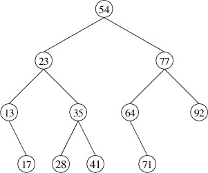

Inorder Traversal
When we store keys and values in an ordered dictionary, we typically want to be able to process the keys in increasing order. The “processing” that we do may be any of a number of things - for example, writing the keys and values to a file or adding them to the end of a list. Whatever processing we want to do, we want to do it increasing order of keys.
If we are implementing the dictionary using a binary search tree, this may at first seem to be a rather daunting task. Consider traversing the keys in the following binary search tree in increasing order:

Processing these keys in order involves frequent jumps in the tree, such as from 17 to 23 and from 41 to 54. It may not be immediately obvious how to proceed. However, if we just think about it with the purpose of writing a recursive method, it actually becomes rather straightforward.
As with most tree-processing algorithms, if the given tree is nonempty, we start at the root (if it is empty, there are no nodes to process). However, the root isn’t necessarily the first node that we want to process, as there may be keys that are smaller than the one at the root. These key are all in the left child. We therefore want to process first all the nodes in the left child, in increasing order of their keys. This is a smaller instance of our original problem - a recursive call on the left child solves it. At this point all of the keys less than the one at the root have been processed. We therefore process the root next (whatever the “processing” might be). This just leaves the nodes in the right child, which we want to process in increasing order of their keys. Again, a recursive call takes care of this, and we are finished.
The entire algorithm is therefore as follows:
- If the given tree is nonempty:
- Do a recursive call on the left child to process all the nodes in it.
- Process the root.
- Do a recursive call on the right child to process all the nodes in it.
This algorithm is known as an inorder traversal because it processes the root between the processing of the two children. Unlike preorder traversal, this algorithm only makes sense for binary trees, as there must be exactly two children in order for “between” to make sense.